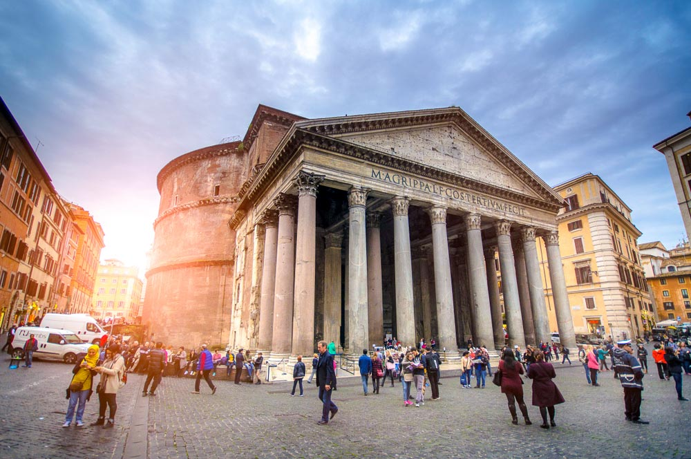
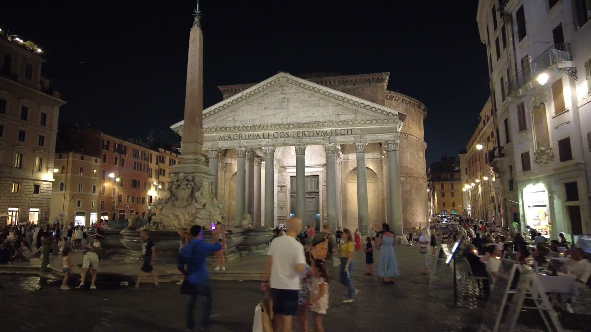
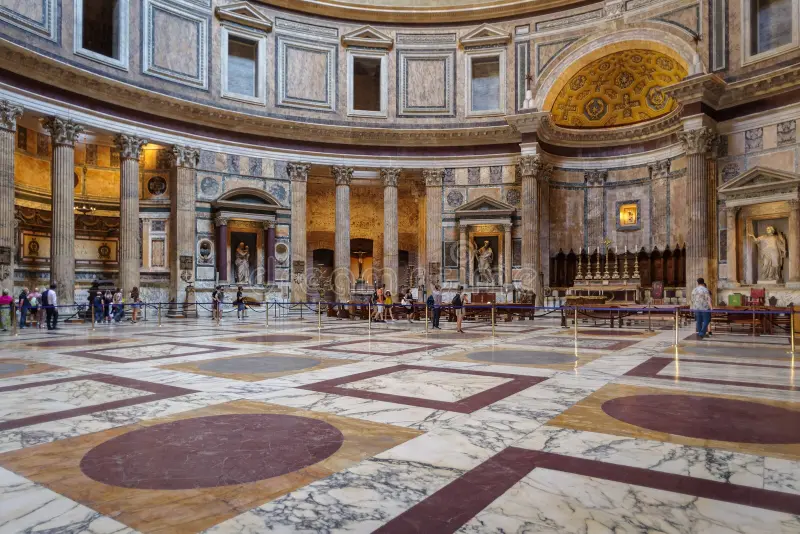
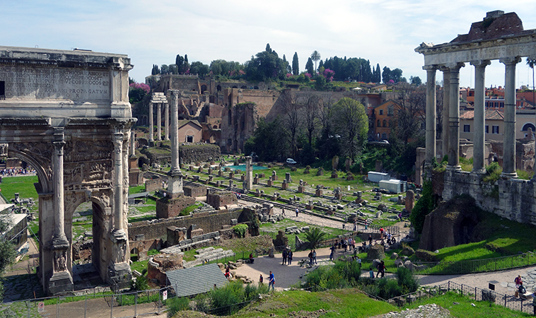
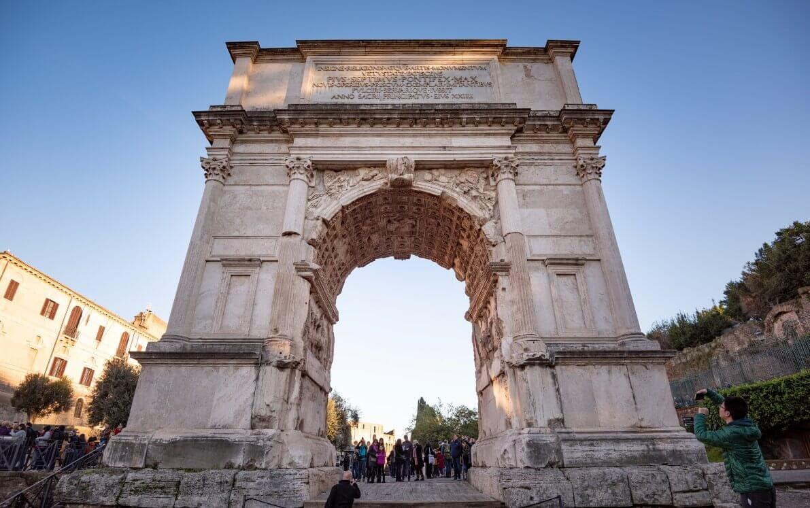
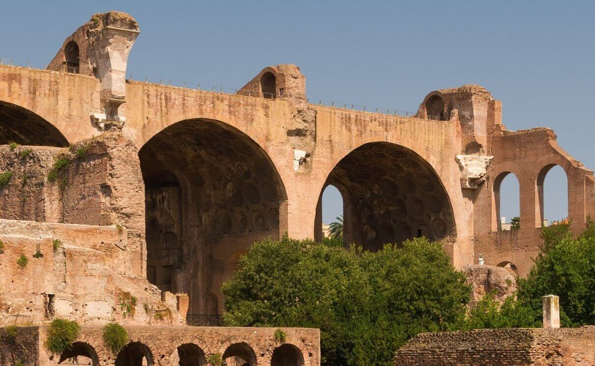
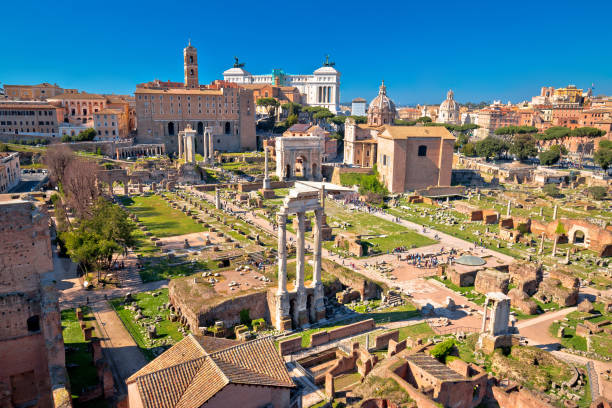
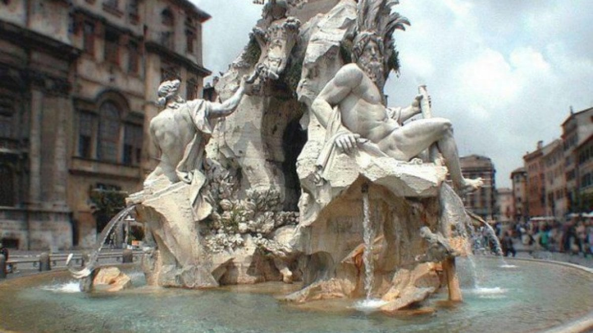
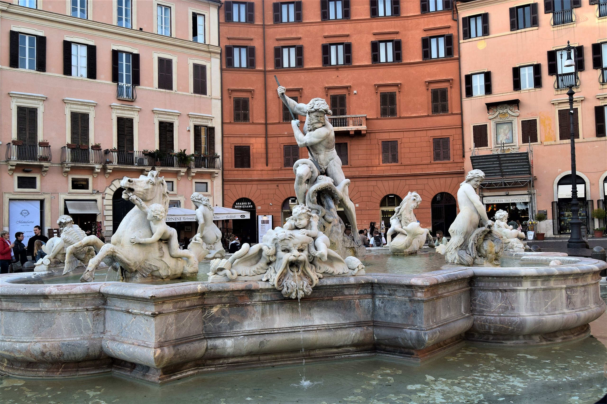
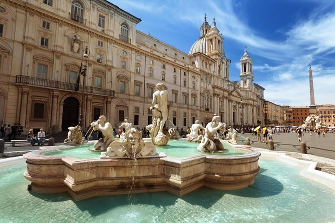

Rome
 |
 |
 |
 |
Rome was called the “Eternal City” by the ancient Romans because they believed that no matter what happened in the rest of the world, the city of Rome would always remain standing. Exploring the city center by foot surrounded by glorious monuments and colossal remains takes you back in time to the “glory that was Rome”.
Rome is a city of contrasts. From the Vatican City, the seat of the Roman Catholic Church to the ancient ruins of the Roman Forum and the Colosseum, Rome is a city that is proud of its ancient glorious heritage. The city is also proud of its modern and vibrant living with open-air markets, stunning artistic fountains, and great food.
Rome is a city of romance, a city of history, and a city of culture. It is an enchanting place to visit and is a truly unforgettable city to visit. Rome, the city of seven hills, enjoyed a mythic beginning. Romulus and Remus — twin brothers who were nursed by a she-wolf and fathered by a war god — reportedly founded the Eternal City. And although historians are a little skeptical about this epic entry into the world, most travelers are absolutely certain that there is something magical about Rome.
Top Attractions in Rome
-
Coliseum The Colosseum is the main symbol of Rome. It's an imposing construction that, with almost 2,000 years of history, will bring you back in time to discover the way of life in the Roman Empire.
The construction of the Colosseum began in the year 72 under the empire of Vespasian and was finished in the year 80 during the rule of the emperor Titus. After completion, the Colosseum became the greatest Roman amphitheater, measuring 188 meters in length, 156 meters in width, and 57 meters in height.
The Colosseum in Ancient Times
During the Roman Empire and under the motto of "Bread and Circuses" the Roman Colosseum (known then as Flavian Amphitheatre) allowed more than 50,000 people to enjoy its finest spectacles. The exhibitions of exotic animals, executions of prisoners, recreations of battles, and gladiator fights kept the Roman people entertained for years.
The Colosseum remained active for over 500 years. The last recorded games in history were celebrated in the 6th century.
Since the 6th century, the Colosseum has suffered lootings, earthquakes, and even bombings during World War Two. Demonstrating a great survival instinct, the Colosseum was used for decades as a storehouse, church, cemetery, and even a castle for nobility.
Trivia
- The original name "Flavian Amphitheatre" was changed to the Colosseum due to the great statue of Nero that was located at the entrance of the Domus Aurea, "The Colossus of Nero". The Domus Aurea was a great palace built under the orders of Nero after the Fire of Rome.
- The emperor Titus inaugurated the Colosseum with 100 days of games, which took the lives of more than 2,000 gladiators.
- The Colosseum had a canvas ceiling to protect people from the sun. The machinery and cages were located beneath the arena.
- There are some theories that the Colosseum was filled with water for naval battle recreations, although for the moment there have not been conclusive investigations.
- Every Good Friday the Pope leads the Way of the Cross procession in the Colosseum. This place has always been closely connected with the church and on this day the early Christians that died in the arena are remembered.

Location
-
Pantheon The Pantheon of Agrippa, also known as the Roman Pantheon, is one of the architectural masterpieces of the Italian capital. It is the best preserved building from ancient Rome.
The construction of the current Pantheon was carried out during the reign of Hadrian, in the year 126 A.D. The name of Agrippa comes from the place in which the current building is built, which was previously occupied by the Pantheon of Agrippa, built in the year 27 B.C and that was destroyed in a fire in the year 80 A.D.
At the beginning of the 7th century the building was donated to the Pope Boniface IV, who transformed it into a church, in which function it currently finds itself in a perfect state of preservation. Architecture
The most surprising aspect of the architecture in the Pantheon is its measurements: the circular building has exactly the same diameter as its height: 43.5 metres. The dome, which has the same diameter, is bigger than that of St. Peter's Basilica. At its top, a 9 meter diameter opening allows natural light to illuminate the entire building.
The rectangular facade that hides the enormous dome is comprised of 16 granite columns which are each 14 meters in height, on which the following inscription can be seen: "M.AGRIPPA.L.F.COS.TERTIVM.FECIT", which means "Marcus Agrippa, son of Lucius, built this temple when he was a Consul." The interior
In the interior of the Pantheon the tombs of numerous Italian kings and a multitude of art works are found. The best-known person who can be found buried in the Pantheon is without doubt the painter and Renaissance architect Raphael.
 Location
-
Roman Forum The Roman Forum was where religious and public life in ancient Rome took place. The Forum is, along with the Colosseum, the greatest sign of the splendor of the Roman Empire that can be seen today.
After the fall of the Empire, the Roman Forum was forgotten and little by little it was buried under the earth. Although in the 16th century, the existence and location of the Forum were already known, it was not until the 20th century that excavations were carried out.
Interestingly, the place where the Forum was built was originally a marshy area. In the 6th century B.C., the area was drained by means of the Cloaca Maxima, one of the first sewer systems in the world. Points of interest
Besides the great number of temples that are in the forum (Saturn, Venus, Romulus, Vesta, etc.), it's worth paying special attention to the following points of interest:
- Via Sacra: This was the main street in ancient Rome that linked the Piazza del Campidoglio with the Colosseum.
- Arch of Titus: This is a triumphal arch that commemorates Rome's victory over Jerusalem. It was built after the death of the emperor Titus.
- Arch of Septimius Severus: An arch erected in the year 203 A.D. to commemorate the third anniversary of Septimius Severus as the emperor.
- Temple of Antoninus and Faustina: Built in the second century, the Temple of Antoninus and Faustina sets itself apart as the best-preserved temple in the Roman Forum.
- Basilica of Maxentius and Constantine: Though now mostly destroyed, its size suggests that this was one of the most important buildings of the Roman Forum.
- The Curia: In this building, the Senate met to make administrative decisions about the Roman government.
- Column of Phocas: Erected in the year 608 A.D. in honor of the emperor of Byzantium, this column, which is over 13 meters high, is one of the few that have remained standing since being built.
  A must-see
Visiting Rome without walking around the Forum is like going to Paris without seeing the Eiffel Tower. As you travel along the Via Sacra, close your eyes and imagine it as it was more than 20 centuries ago, when Julius Caesar walked there.
The best way to skip the line and get to know the Forum in detail is to take a guided tour. We'll visit three of the main monuments in the city, the Colosseum, Roman Forum, and Palatine Hill, skipping the line, and all with an expert guide.
If you prefer to discover it on your own, we recommend that you head first thing in the morning, as this is when people head to visit the Vatican. You can also skip the lines with the Rome Pass discount card. Location
-
Piazza Navona The public square is built on the site where the Stadium of Domitian (Circus Agonalis), founded in 86 AD, once stood. It could hold approximately 20,000 spectators, which came here to see different athletic competitions.
Fountains of Piazza Navona
The most beautiful parts of Piazza Navona are its three fountains, designed during the papacy of Gregory XIII:
-
Fontana dei Quattro Fiumi
Erected in the centre of Piazza Navona, the Fontana dei Quattro Fiumi (Fountain of the Four Rivers) was designed by Bernini in 1651. The four statues represent the most important rivers of the continents where Christianity had spread; the Nile, Danube, the Ganges and Rio de la Plata. In the middle there is an obelisk measuring 52 ft (16 m), which had originally been part of the Circus of Maxentius, found in the Appian Way Regional Park.
-
Fontana del Moro
Sculpted by Giacomo della Porta and later perfected by Bernini, who added the figure of the Moor, the fountain was initially called the “Seashell Fountain.” This fountain is located on the southern side of the square.
-
Fontana del Nettuno
The Fontana del Nettuno (Fountain of Neptune) was also created by Giacomo della Porta in 1574, but remained unfinished for approximately three-hundred years, until 1878, when it was decorated by Antonio Della Bitta and Gregorio Zappalà.
A charming area
The square is surrounded by restaurants and terraces giving Piazza Navona a lively and delightful atmosphere during the day. Here, visitors can enjoy performances by street artists like magicians and dancers.
The most imposing buildings which look onto the square are the Church of Sant'Agnese in Agone and the Palazzo Pamphilj.
   Location
-